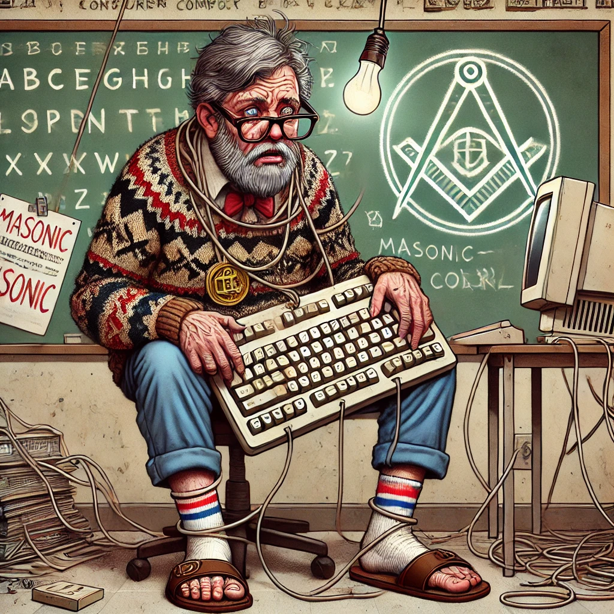

Teorie Spiskowe Buzaka w Sandałach
Sandały: Narzędzie Wolności
Teoria: Sandały to narzędzie wolności, w przeciwieństwie do butów z zamkniętym czubkiem, które są antenami 5G.
Dowód: "Każdy but z zamkniętym czubkiem to antena 5G. Sandały? Izolują cię od energii Iluminatów!"
Kable Ethernet: Smycze Matrixa
Teoria: Kable Ethernet to smycze Matrixa, które kontrolują twoje myśli.
Dowód: "Im dłuższy kabel, tym bardziej kontrolują twoje myśli."
HTML: Alfabet Masonów
Teoria: HTML jest alfabetem masonów i każda strona internetowa to ukryta wiadomość dla loży masońskiej.
Dowód: "Div to ich symbol władzy."
Żarówki LED: Chipy Kontrolujące Sny
Teoria: Żarówki LED zawierają chipy, które kontrolują nasze sny.
Dowód: "Dlatego w klasie używamy halogenów. Ciepłe światło broni przed podsłuchem reptilian."
Windows 10: Zapisuje Twoje Sny w Chmurze
Teoria: Windows 10 zapisuje Twoje sny w chmurze, a każdy restart komputera to moment kompresji twoich myśli.
Dowód: "Każdy restart komputera to moment, w którym twoje myśli są kompresowane do pliku zip."
Sandały z Marketu: Projekty DARPA
Teoria: Sandały z marketu to tajne projekty DARPA, które służą do geolokalizacji stopowej.
Dowód: "Każda para za 39,99 zł to narzędzie geolokalizacji stopowej."
NASA: Koduje Tajemnice Wszechświata w GPS
Teoria: NASA koduje tajemnice wszechświata w systemach GPS, a aplikacje nawigacyjne manipulują naszą drogą do pracy.
Dowód: "Każda aplikacja nawigacyjna to sposób na manipulację twoją drogą do pracy."
Klawiatura QWERTY: Kod CIA
Teoria: Klawiatura QWERTY jest kontrolnym kodem CIA, który przechwytuje nasze wpisy.
Dowód: "Dlatego preferuję Dvoraka. Im więcej 'aeiou', tym mniej podsłuchów."
GitHub: Kontakt z Obcymi
Teoria: GitHub jest miejscem, gdzie kontaktujemy się z obcymi cywilizacjami, a każda aktywność na repozytorium wysyła sygnały w kosmos.
Dowód: "Każdy push do repozytorium wysyła sygnał do kosmicznego skanera rasy Andromedan."
Wi-Fi: Sterowane przez Księżyc
Teoria: Wi-Fi działa tylko w nocy, kiedy jest sterowane przez Księżyc.
Dowód: "Routery? Tylko po zmroku mają największą moc, gdy Ziemia znajduje się pod pełnym nadzorem kosmosu."
